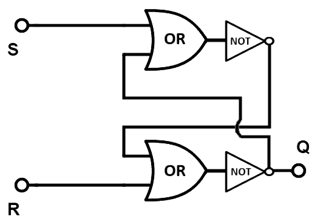

Flip-Flop
A circuit built from gates that can store one bit. One input line is used to set its stored value to 1. One input line is used to set its stored value to 0. While both input lines are 0, the most recently stored value is preserved. The stored value is called the state of the flip-flop.
